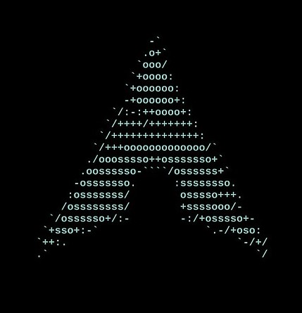

Nice to see you here! Know me better by exploring this.

I'm a Computer Science student at the University of Costa Rica (UCR) with a strong passion for technology and problem-solving. My main goals are to continuously learn new technologies, deepen my understanding of software development, and apply my knowledge in real-world projects. I am particularly interested in areas like web development, and data engineering, always seeking opportunities to expand my skills and work on innovative solutions. I thrive in collaborative environments and enjoy tackling complex challenges that push me to grow as a professional.
Skills
Education
Certificates